Welcome: From One Image to a Series
Lesson 6 moves from single-image generation to controlled visual production. Your mission is to learn what can change, what should remain stable, and how to document the process so that a visual series becomes explainable.
Stabilize
Choose anchors such as subject, object, style, palette, lighting, or composition.
Vary
Change one meaningful element at a time.
Explain
Record prompts, settings, outputs, problems, and next decisions.
Learning Objectives
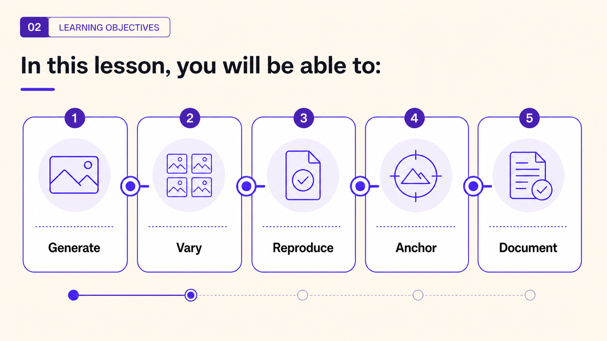
- Explain the difference between full image generation, controlled variation, remix, and iteration.
- Describe how seeds, model choice, prompt stability, sampler settings, steps, CFG scale, and visible tool settings affect reproducibility.
- Use prompt modifications to create controlled variations while preserving selected visual anchors.
- Identify why character, object, style, lighting, and composition consistency are difficult in AI image generation.
- Design a small visual series with coherent subject, style, atmosphere, and purpose.
- Document prompt and parameter changes so results can be compared, repeated, or refined.
- Evaluate which variables have the strongest influence on visual coherence in a chosen tool.
- Explain the creative and technical decisions behind a set of generated images.
Lesson Map: From One Image to a Controlled Series
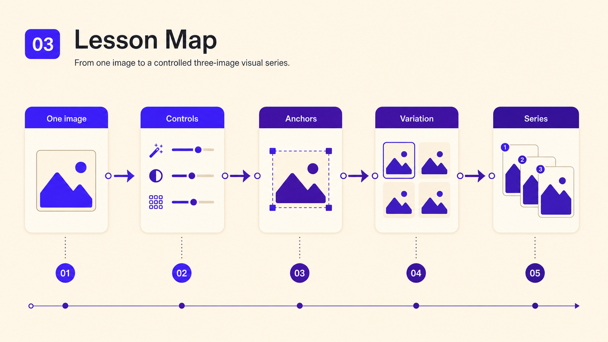
| Mission | Interaction type | Main skill |
|---|---|---|
| 1. Workflow launch | Readiness checklist + gap-fill | Move from single-image success to visual workflow thinking. |
| 2. Variation, remix, iteration | Matching + card sort | Distinguish controlled change, creative transformation, and revision cycles. |
| 3. Consistency anchors | Click-to-reveal + hotspot task | Identify what can remain stable across a series. |
| 4. Seed and settings detective | Gap-fill + interface checklist | Understand reproducibility and hidden or visible settings. |
| 5. Stable vs variable prompt builder | Drag-and-drop sorting | Separate fixed prompt anchors from controlled variables. |
| 6. Reproduce before you vary | Hands-on lab | Document a base generation and test reproducibility. |
| 7. One character, three scenes | Guided series lab | Create a three-image series with one changing element. |
| 8. Parameter influence test | Controlled experiment matrix | Identify variables with strongest effect on coherence. |
| 9. Consistency clinic | Peer review + evidence cards | Diagnose identity, style, lighting, palette, and composition drift. |
| 10. Final Boss | Mini project | Plan, generate, document, and defend a coherent visual series. |
From One Image to a Visual Workflow
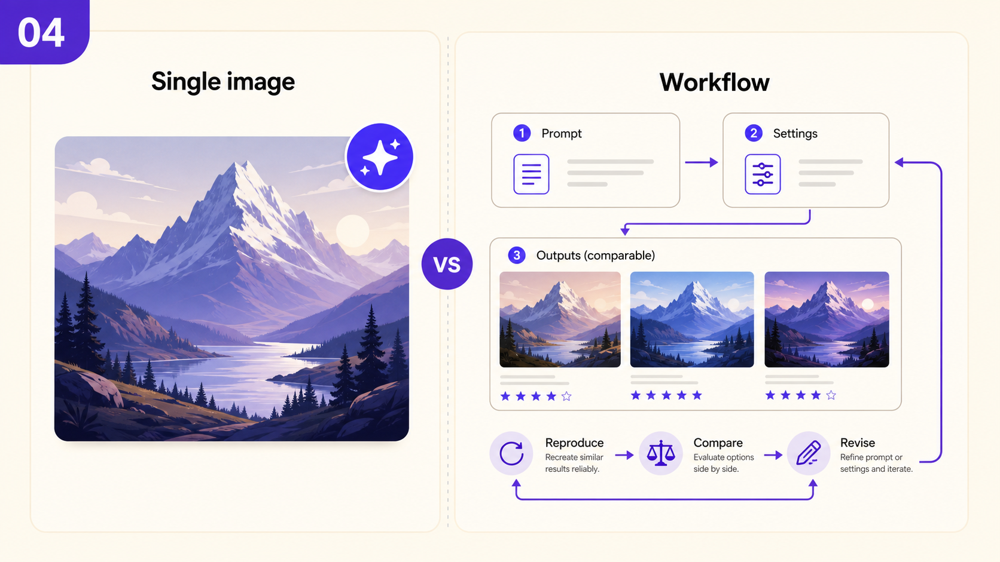
A single generated image can be visually impressive by accident. A visual workflow requires continuity, reproducibility, comparison, revision, and documentation. In photography, design, advertising, games, and audiovisual preproduction, the professional question is often: Can I make related images that belong to the same project?
Mini-Interaction: Is This a Workflow?
Classify each process as random output or controlled workflow.
Variation, Remix, Iteration, and Visual Seriality
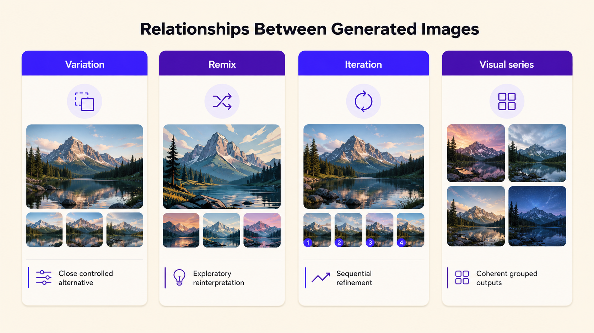
Lesson 6 uses four terms to describe how generated images relate to one another. A variation changes selected elements while preserving core identity. A remix reinterprets the image more freely. Iteration is the cycle of generating, evaluating, revising, comparing, and documenting. A visual series is a coherent group of related images.
| Concept | Main logic | Relationship to identity | Best use |
|---|---|---|---|
| Variation | Controlled change | Preserves core identity | Visual series, campaign alternatives, continuity tests |
| Remix | Creative transformation | May reinterpret identity, genre, or visual world | Exploration, moodboards, conceptual alternatives |
| Iteration | Improvement cycle | Preserves the learning process more than any one image | Diagnosing failure and refining outputs |
| Visual series | Related group of images | Requires both stability and difference | Storyboards, campaigns, product sets, portfolio sequences |
Activity: Variation or Remix Card Sort
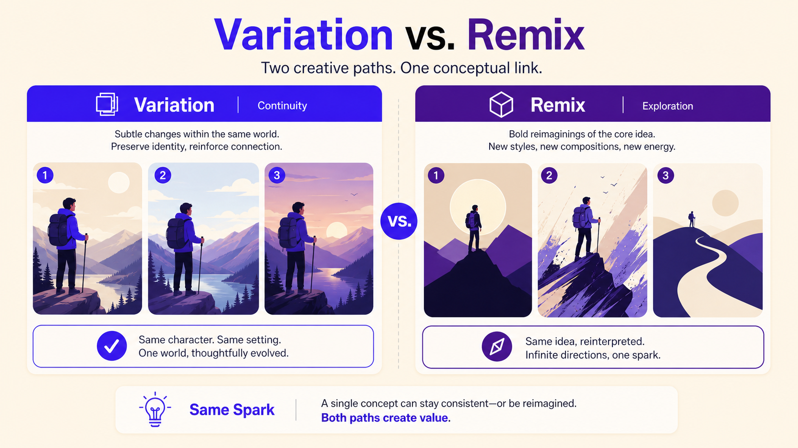
| Change card | Correct category | Why? |
|---|---|---|
| Change only soft daylight to dramatic side lighting. | Variation | The subject, setting, style, and basic purpose remain stable. |
| Change realistic photograph into cyberpunk cinematic underground studio. | Remix | The visual world, genre, lighting language, and mood are transformed. |
| Change medium shot to close-up. | Variation | The framing changes, but the core concept remains stable. |
| Change the design student into a robot detective in a neon city. | Remix | The subject identity and narrative world change. |
| Change color palette from muted blue/beige to warm beige/green. | Variation | Palette shifts mood while preserving the project identity. |
| Transform it into a minimalist poster illustration with abstract icons. | Remix | The medium and representational logic change. |
Seeds, Reproducibility, and Consistency Anchors
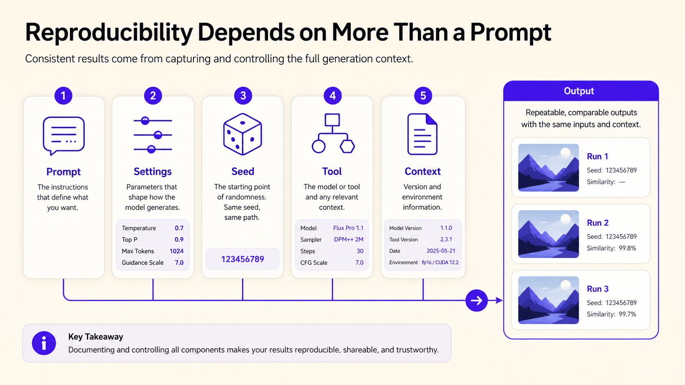
A seed is a numerical value that initializes the random generation process. It can help compare changes when the prompt, model, sampler, steps, CFG scale, aspect ratio, and tool version remain stable. However, a seed alone does not guarantee perfect identity or exact reproduction, especially when settings are hidden or tools update their models.
Activity: Seed and Settings Detective
Open an image-generation tool or inspect a screenshot provided by the instructor. Mark whether each setting is visible, hidden, or unavailable.
| Setting / hotspot | Visible | Hidden | Unavailable | Why it matters |
|---|---|---|---|---|
| Prompt box | ☐ | ☐ | ☐ | The exact prompt is the first reproducibility anchor. |
| Model or preset | ☐ | ☐ | ☐ | Changing the model may change visual identity and style. |
| Seed | ☐ | ☐ | ☐ | Useful for controlled comparison, if supported. |
| Aspect ratio | ☐ | ☐ | ☐ | Frame shape affects composition and production use. |
| Sampler | ☐ | ☐ | ☐ | May influence texture, speed, and stability. |
| Steps | ☐ | ☐ | ☐ | Can affect refinement and generation time. |
| CFG scale / guidance | ☐ | ☐ | ☐ | Can affect prompt adherence and artifacts. |
| Tool version / model update | ☐ | ☐ | ☐ | Hidden updates may affect reproducibility. |
Consistency Anchors
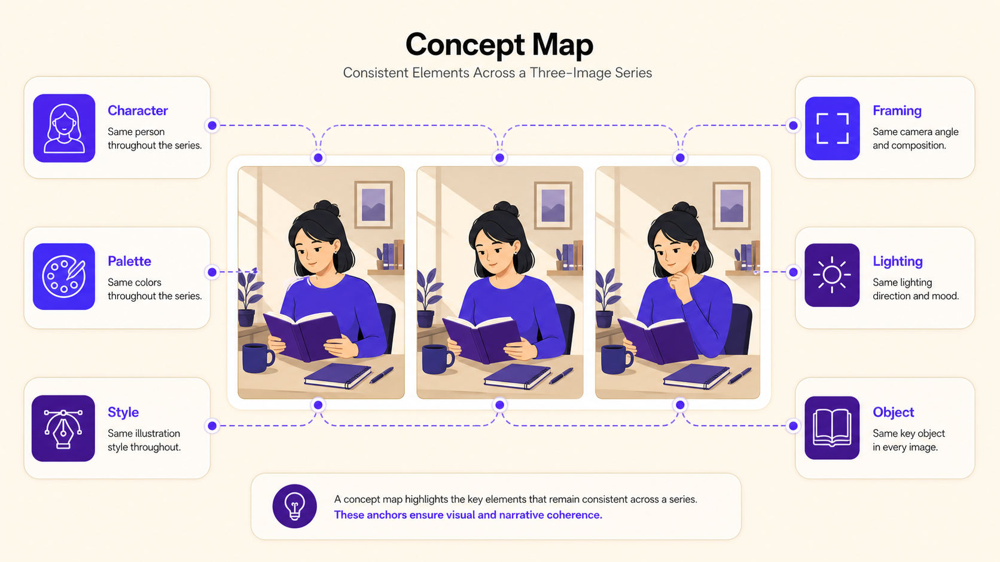
A coherent series depends on repeated anchors. Anchors may include character, object, style, lighting, color palette, composition, narrative, camera language, and tool settings. The learner decides which anchors matter and which element should change.
| Consistency type | Example | Why it matters |
|---|---|---|
| Character consistency | Same person across several scenes | Important for storyboards, comics, audiovisual continuity, and character concepts. |
| Object consistency | Same product or prop across angles | Important for product visualization, advertising, and design mockups. |
| Style consistency | Same visual language across a series | Helps images feel like one project rather than unrelated outputs. |
| Lighting consistency | Similar light quality and direction | Supports realism, mood, and continuity. |
| Color consistency | Stable palette | Creates campaign coherence and visual identity. |
| Composition consistency | Similar framing or layout logic | Useful for posters, slides, social media sets, and storyboard frames. |
| Narrative consistency | Images feel part of the same story | Supports audiovisual preproduction and visual storytelling. |
Activity: Stable Anchor Builder
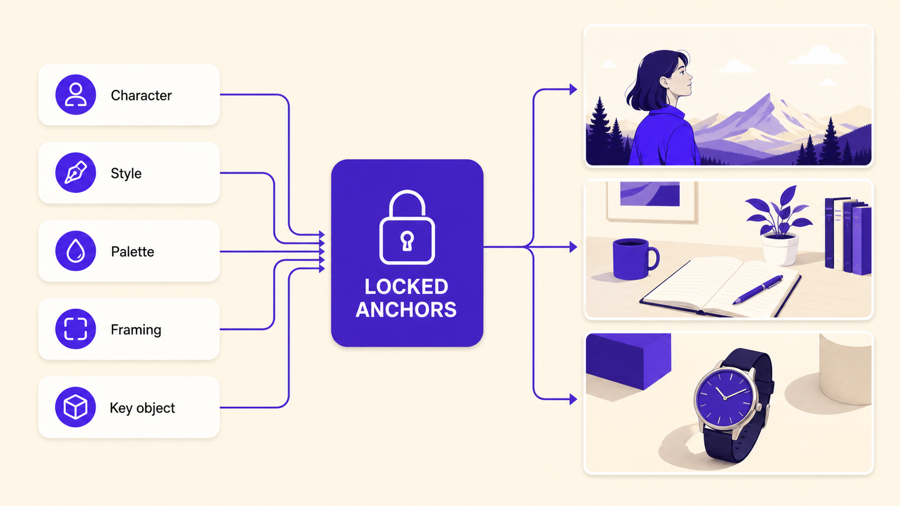
Sort prompt elements into stable anchor or variable element. Then write one stable anchor that can be reused in three prompts.
| Prompt element card | Stable anchor or variable? | Feedback |
|---|---|---|
| young documentary photographer with short curly black hair | Stable anchor | Character description should remain stable if identity matters. |
| round glasses and dark green jacket | Stable anchor | Clothing and face details help the viewer recognize the character. |
| vintage silver camera | Stable anchor | A repeated object can become a strong identity cue. |
| realistic editorial photography | Stable anchor | Repeated style makes the series feel unified. |
| muted blue and beige color palette | Stable anchor | Palette supports coherence across changing scenes. |
| inside a university studio / sunrise street / contemporary gallery | Variable element | The environment changes to create controlled variation. |
| Stable character / style anchor | Variable to change | Reason for this choice |
|---|---|---|
70–80 Stable Prompt Strategy
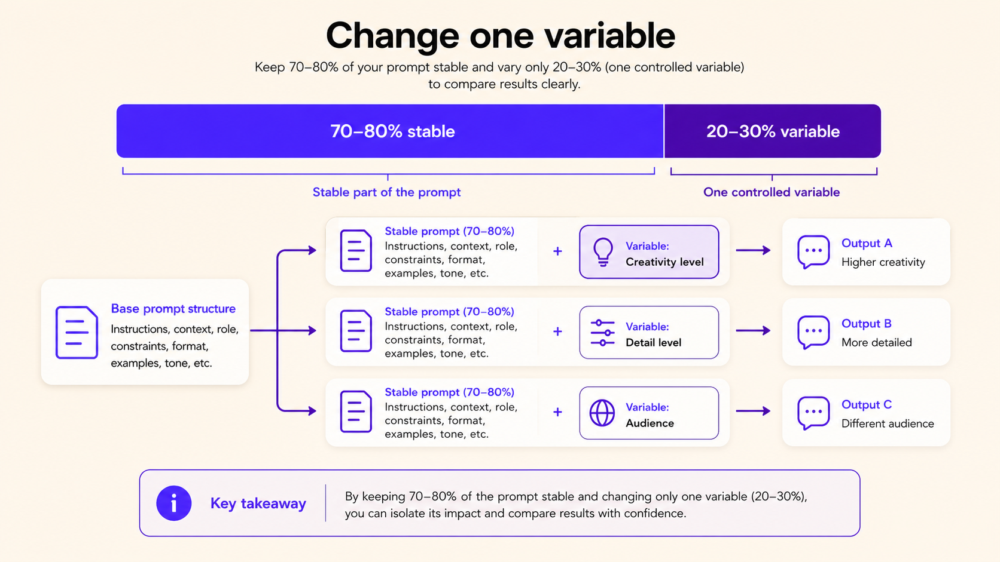
A practical strategy for controlled variation is to keep most of the prompt stable and change one meaningful section. The exact percentage is not mathematical; it reminds learners that continuity requires repeated anchors.
| Stable 70–80% prompt section | Variable 20–30% prompt section | Why this is controlled |
|---|---|---|
Activity: Reproduce Before You Vary
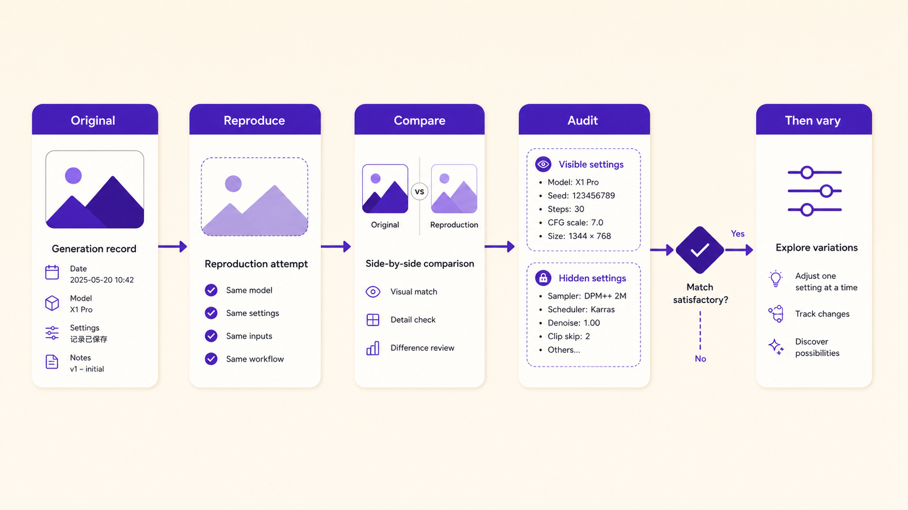
Generate one base image. Record all visible settings. Then try to reproduce the same image using the same visible settings. Do not begin variations until the base generation has been documented.
| Setting | Value used | Visible in tool? | Effect noticed / notes |
|---|---|---|---|
| Tool / platform | Visible / Hidden / Unavailable | ||
| Model / preset | Visible / Hidden / Unavailable | ||
| Prompt | Visible / Hidden / Unavailable | ||
| Negative prompt | Visible / Hidden / Unavailable | ||
| Seed | Visible / Hidden / Unavailable | ||
| Aspect ratio | Visible / Hidden / Unavailable | ||
| Sampler / steps / CFG | Visible / Hidden / Unavailable | ||
| Result reproduced? | Yes / No / Approximately |
Activity: One Character, Three Scenes
Write a stable character anchor using role, appearance, object, style, color palette, and camera language. Then combine it with three different scene variables.
| Series element | Your text |
|---|---|
| Stable character anchor | |
| Stable object anchor | |
| Stable style anchor | |
| Stable color palette | |
| Stable camera/composition language | |
| Scene A variable | inside a university photography studio, surrounded by lights, tripods, and printed contact sheets |
| Scene B variable | walking through a quiet city street at sunrise, wet pavement, soft reflections |
| Scene C variable | standing in a small contemporary gallery, looking at AI-generated photographic prints on the wall |
| Element | Image 1 | Image 2 | Image 3 | Consistent? | Evidence |
|---|---|---|---|---|---|
| Face | ☐ | ☐ | ☐ | Yes / Partly / No | |
| Hair | ☐ | ☐ | ☐ | Yes / Partly / No | |
| Glasses | ☐ | ☐ | ☐ | Yes / Partly / No | |
| Jacket | ☐ | ☐ | ☐ | Yes / Partly / No | |
| Camera | ☐ | ☐ | ☐ | Yes / Partly / No | |
| Style | ☐ | ☐ | ☐ | Yes / Partly / No | |
| Lighting | ☐ | ☐ | ☐ | Yes / Partly / No | |
| Color palette | ☐ | ☐ | ☐ | Yes / Partly / No | |
| Composition | ☐ | ☐ | ☐ | Yes / Partly / No |
Activity: Variation or Remix? Generate and Compare
Create or evaluate a base image, one controlled variation, and one broader remix.
| Version | Prompt change | What stayed stable? | What transformed? | Best use |
|---|---|---|---|---|
| Base | Original base prompt | |||
| Variation | Change only one element: lighting, camera distance, color palette, or composition | |||
| Remix | Change genre or visual world: cyberpunk, documentary, graphic illustration, surreal, etc. |
Parameter Influence Test
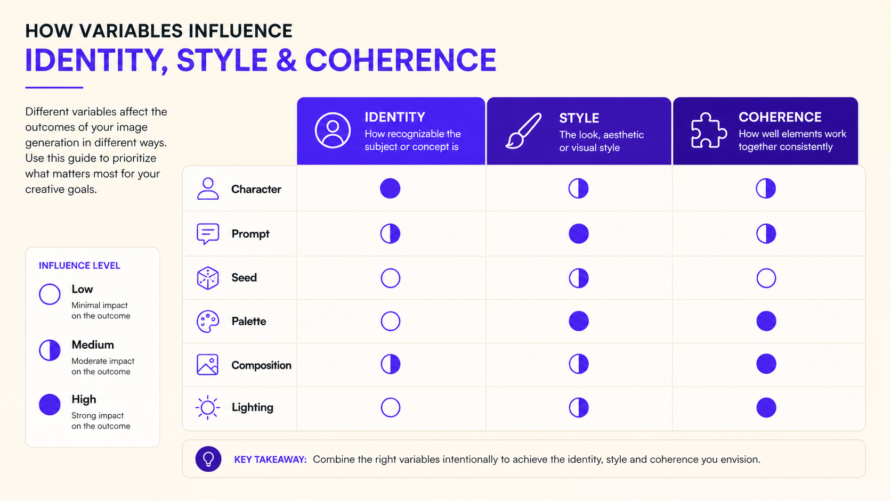
Choose one base prompt. Run tests by changing one variable at a time. If your tool does not expose a setting, mark it as unavailable and test a visible variable instead.
| Test | Variable changed | What stayed fixed? | Visual impact | Consistency impact | Conclusion |
|---|---|---|---|---|---|
| Seed | Prompt, model, aspect ratio, style | ||||
| Style | Subject, setting, composition | ||||
| Lighting | Subject, style, composition | ||||
| Composition | Subject, style, lighting | ||||
| Color palette | Subject, style, scene | ||||
| CFG / steps if visible | Prompt, seed, model |
Activity: Hotspot: What Changed?
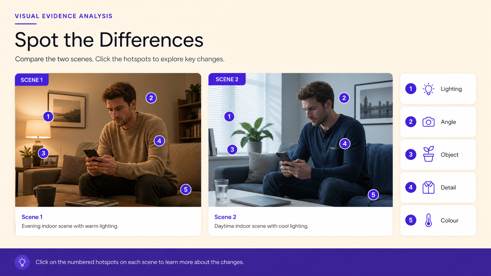
Compare two images from your series or from the instructor. Place evidence markers on visible differences.
| Hotspot label | Use when you notice... | Evidence in image |
|---|---|---|
| FACE DRIFT | The person appears to change identity, age, or facial structure. | |
| CLOTHING DRIFT | Clothing color, garment type, or key accessories change. | |
| OBJECT DRIFT | The camera, prop, or product changes shape or disappears. | |
| STYLE DRIFT | The image medium or visual language changes unexpectedly. | |
| LIGHTING SHIFT | Light direction, quality, color, or mood changes. | |
| PALETTE SHIFT | Color scheme stops matching the intended series. | |
| COMPOSITION SHIFT | Framing, scale, viewpoint, or layout logic changes. | |
| NARRATIVE BREAK | The images no longer feel part of the same project or story. |
Activity: Consistency Clinic
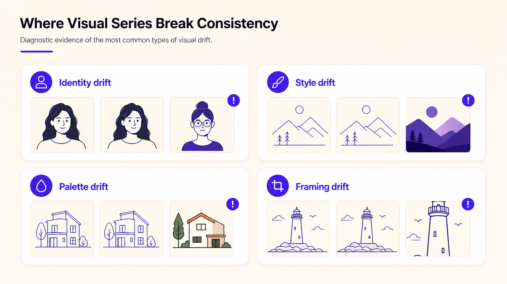
Exchange a three-image series with a partner. Use evidence from the scorecard rather than saying only “it looks consistent” or “it looks different.”
| Series reviewed | Strongest consistency anchor | Weakest consistency anchor | Evidence | Recommended next action |
|---|---|---|---|---|
Activity: Workflow Decision Challenge
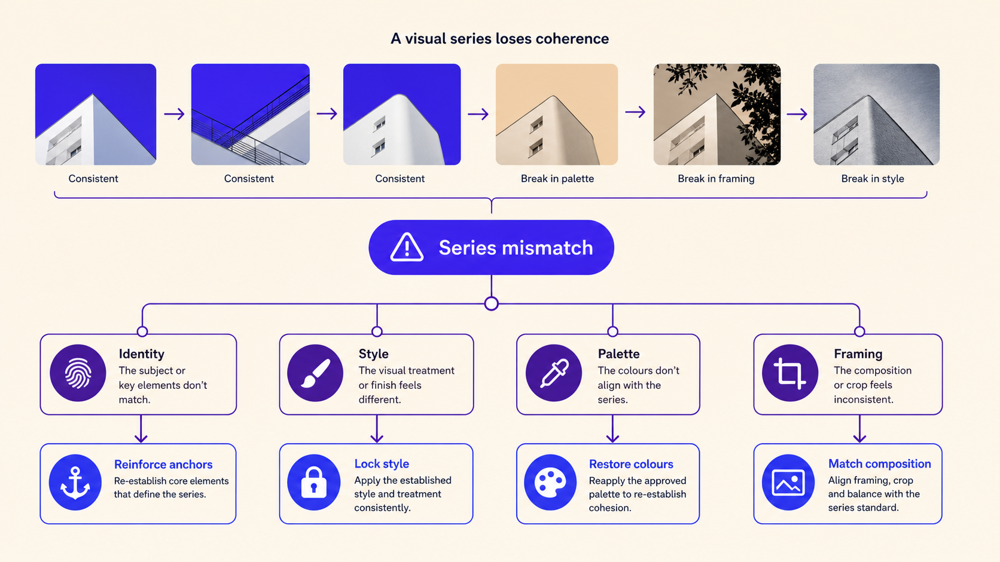
For each scenario, choose the best next move: keep testing, strengthen anchor, use reference, switch tool, edit manually, or accept as remix.
| Scenario | Best move | Why? | Safer / stronger next step |
|---|---|---|---|
| The same character keeps changing face across scenes. | Use reference / strengthen anchor | ||
| The series is coherent but all images are too similar and boring. | Introduce controlled variable | ||
| The product changes shape every time. | Use reference / switch workflow | ||
| The lighting changes are successful but the style changes from photo to illustration. | Strengthen style anchor | ||
| The remix is visually exciting but no longer fits the campaign. | Accept as exploration, not final series | ||
| The title text appears fake in every image. | Edit manually / change workflow |
Final Boss: Build a Three-Image Visual Series
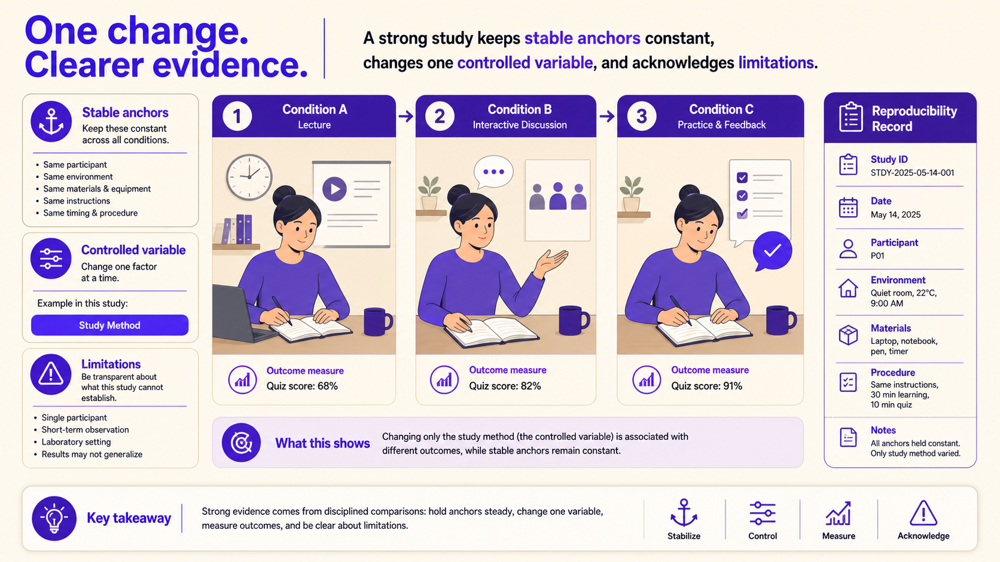
| Project decision | Your answer |
|---|---|
| Series purpose | |
| Target audience | |
| Stable subject / object | |
| Stable style | |
| Stable lighting or color palette | |
| Stable composition rule | |
| Controlled variable across images | |
| Tool / platform | |
| Visible settings to document | |
| Responsible-use constraint |
| Image | Stable anchor text reused | Variable text changed | Settings / seed | Main problem | Next decision |
|---|---|---|---|---|---|
| Image 1 | |||||
| Image 2 | |||||
| Image 3 |
Reusable Documentation Templates
Generation and Settings Log
| Prompt | Tool | Model / preset | Seed | Aspect ratio | Steps / CFG / sampler | Output notes | Next action |
|---|---|---|---|---|---|---|---|
Stable Anchor Planner
| Anchor type | Prompt text | Why it matters | Keep / revise |
|---|---|---|---|
| Character | |||
| Object | |||
| Style | |||
| Lighting | |||
| Palette | |||
| Composition | |||
| Narrative |
Final Assessment
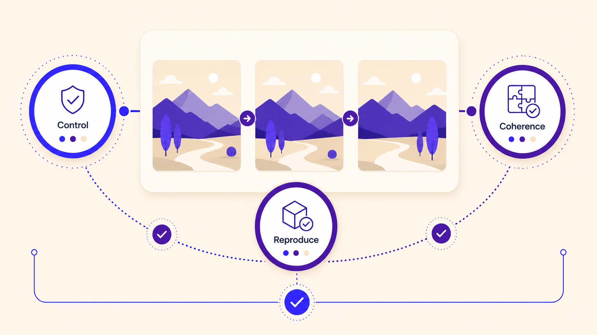
Short answer
| Question | Your answer |
|---|---|
| Explain the difference between a variation and a remix. | |
| Write one stable character anchor for a three-image series. | |
| Why should settings be documented before creating variations? |
Exit Ticket and Completion
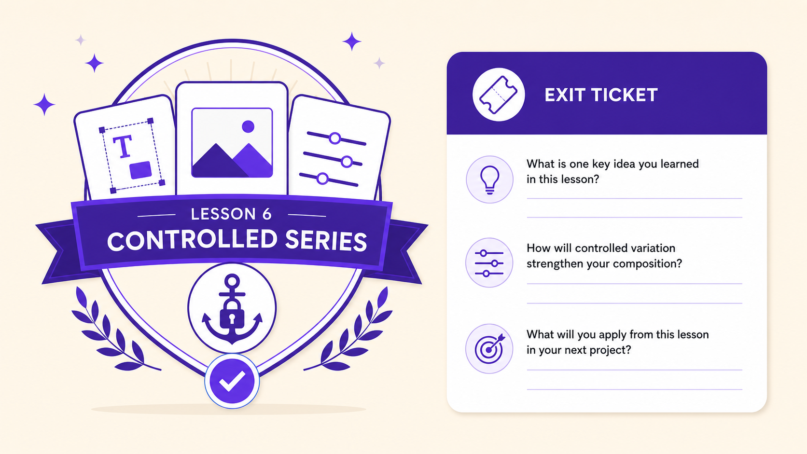
Controlled variation is the bridge between image generation and visual production. A useful habit is to keep most of a prompt stable and change one meaningful variable at a time.
| Prompt | Your answer |
|---|---|
| One stable anchor I can now use in a visual series is... | |
| One variable I can change intentionally is... | |
| One setting I should document before variation is... | |
| One reason a remix may not work for continuity is... | |
| The most important lesson about controlled variation is... |
| Task | Complete |
|---|---|
| Completed the workflow gap-fill. | ☐ |
| Matched variation, remix, iteration, and visual series. | ☐ |
| Completed the seed and settings detective task. | ☐ |
| Built one stable anchor and one variable section. | ☐ |
| Generated or planned a base image and attempted reproduction. | ☐ |
| Created or planned one character across three scenes. | ☐ |
| Completed at least one consistency scorecard. | ☐ |
| Tested or documented at least three variables. | ☐ |
| Participated in peer diagnosis or consistency clinic. | ☐ |
| Completed the Final Boss series plan and reflection. | ☐ |
| Completed the exit ticket. | ☐ |